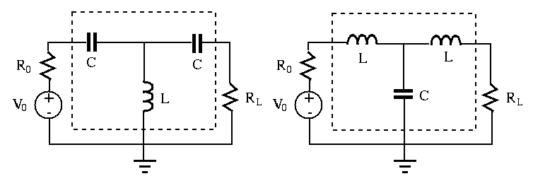

Maximize power delivery in AC systems
Previously we considered the maximization of the power received by a
resistive load  . This problem can be generalized to AC circuit containing
. This problem can be generalized to AC circuit containing
 and
and  , as well as
, as well as  . Consider a voltage source composed of an ideal
voltage source
. Consider a voltage source composed of an ideal
voltage source
 in series with an internal
impedance
in series with an internal
impedance  , and a load impedance
, and a load impedance  . The load current
is:
. The load current
is:


Example:
Find load impedance  so that it receives maximum power from the rest
of the circuit. Find this maximum power
so that it receives maximum power from the rest
of the circuit. Find this maximum power  and load current
and load current  .
.

Assume the voltage source is 200 V, current source is  A, and the
impedances of R, L and C are respectively
A, and the
impedances of R, L and C are respectively  ,
,  and
and
 . To solve this circuit, we can use either Thevenin's
voltage source or Norton's current source method.
. To solve this circuit, we can use either Thevenin's
voltage source or Norton's current source method.


Geometric mean method
The load resistance  will receive maximum power only if it matches the
internal resistance
will receive maximum power only if it matches the
internal resistance  of the voltage source,
of the voltage source,  . However, when
. However, when
 , the resistance match can still be achieved by inserting a
matching circuit between the source and load as shown in the figure.
, the resistance match can still be achieved by inserting a
matching circuit between the source and load as shown in the figure.
The matching circuit is composed of two capacitors  of the same
impedance
of the same
impedance  and an inductor
and an inductor  of impedance
of impedance  . Alternatively, the
two capacitors and the inductor in the matching circuit can be replaced by
two inductors and a capacitor. If the frequency of the voltage source is
. Alternatively, the
two capacitors and the inductor in the matching circuit can be replaced by
two inductors and a capacitor. If the frequency of the voltage source is
 , then
, then
 , i.e.,
, i.e.,  .
.

The total impedance of the new load composed of all four components  ,
,
 as well as
as well as  can be found as:
can be found as:


This method can be generalized to any AC circuit composed of a voltage
source with an internal impedance  and load impedance
and load impedance  .
.

As this method requires a fixed reactance  , it is valid for single
frequency
, it is valid for single
frequency
 .
.
Example: An audio amplification circuit with an output voltage  and internal resistance
and internal resistance
 is used to drive a speaker with
is used to drive a speaker with
 .
The power received by the speaker is:
.
The power received by the speaker is:


To maximize the power delivered to the speaker, we add a matching circuit
composed of  with impedance
with impedance  and
and  with impedance
with impedance
 . When
. When
 , the resistance of the new
load
, the resistance of the new
load
 matches the internal resistance
matches the internal resistance  of the source,
and the speaker receives maximum power of
of the source,
and the speaker receives maximum power of
 (half of
the total power
(half of
the total power
 ), 6.76 times the power without
the matching circuit.
), 6.76 times the power without
the matching circuit.
As the frequency in the system is not constant, the matching is achieved only at one particular frequency, typically chosen to be the middle of the frequency range.
Matching resistances by a transformer
An ideal transformer can be used to match the load  to the internal
resistance
to the internal
resistance  of the source. Recall the following relations for an ideal
transformer
of the source. Recall the following relations for an ideal
transformer


Example: In the previous example with
 ,
,
 , a transformer with turn ratio of
, a transformer with turn ratio of
 can be used to match the load
can be used to match the load
 to internal resistance
to internal resistance  .
.
Example:
 ,
,  , and the voltage
source is
, and the voltage
source is  . Find the turn ratio of the transformer so that
the load resistor will get maximum power from the voltage source.
. Find the turn ratio of the transformer so that
the load resistor will get maximum power from the voltage source.
When the load resistor receives maximum power if its resistance is equal to the internal resistance of the voltage source.